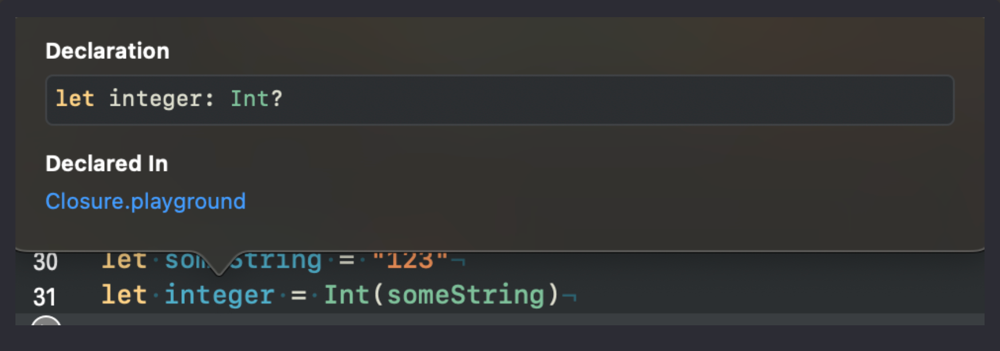

Урок 15. Преобразование типов.
14 Января 2023

Загрузить материалы к уроку.
Преобразование типа String.
В этом уроке мы будем говорить о преобразовании типов данных в языке Swift, а именно о том, как можно изменить тип свойства на другой тип данных. Это очень важная тема в программировании, так как в ходе работы приложения часто требуется работать с данными разных типов, и преобразование их в нужный формат может быть ключевым моментом в обработке информации.
Начнем с типа данных String. Как вы уже знаете, этот тип данных представляет собой последовательность символов и может содержать буквы, цифры, знаки препинания и другие символы. Часто при работе с данными приложения требуется преобразовать строку в числовой тип данных, например, чтобы выполнить математические операции.
Рассмотрим пример:
У нас есть строка, и мы можем попытаться сделать из нее число для этого мы должны использовать тип данных Int:
В круглых скобках после типа данных Int мы определяем то свойство, которое хотим преобразовать, в нашем случае это someString.
В результате, свойство integer будет иметь значение опциональный Int?, давайте в этом убедимся, зажимаем option и кликаем по свойству:
Так как у системы нет уверенности что мы сможем из строки получить число, то она определяет тип как опциональный, что бы в случае не удачной попытки преобразования, мы получили nil, так сказать заглушку для компилятора.
Преобразование строки в число произойдет только если там есть число, если будет хоть какой либо лишний символ, свойство integer примет значение nil, давайте поставим пробел в строку:
Преобразования не произошло, так как пробел это тоже символ.
Вы уже знакомы с опциональными значениями, ответьте себе на вопрос, какого типа будет свойство integer и какое значение оно будет иметь, в следующей реализации:
Свойство integer будет иметь значение 0, а значит и тип данных Int.
Напомню как это работает, компилятор пытается преобразовать строку в Int, у него это не получается из за пробела и выражение Int(someString) приобретает значение nil, мы пытаемся извлечь опциональное значение при помощи значения по умолчанию, и так как нам вернулось nil, то компилятор возьмет 0.
Подумайте самостоятельно какое значение и какой тип данных будет у свойства integer если в нашей строке не будет лишнего пробела. (Проверьте в плейграунде)
Точно так же можно преобразовать тип String в тип Double:
Подумайте какой тип данных имеет свойство double (проверьте свои догадки в плейграунде)
Механизм работы точно такой же как и с преобразованием в тип Int, система все так же не уверена что из строки можно получить тип Double, поэтому определяет тип свойства как опциональный Double?.
Снова ответьте себе на вопрос, получится ли строку someString преобразовать в тип Double, или вернется nil?
Получится, так как целые числа можно представить типом Double. Это будет опциональное значение, потому что строка, это не предсказуемый объект, и там может быть все что угодно, что не имеет отношение к числу.
Если на последний вопрос вы себе ответите верно, то вы определенно усвоили тему. Какие значения будут у свойств integer и double в следующей реализации:
Свойство integer будет иметь значение nil, так как в строке число с плавающей точкой, а double, будет равно 123, все по той же причине, потому что в строке число с плавающей точкой.
Вы так же можете строку преобразовать в тип Bool, и результат будет тот же опциональный Bool?, сами понимаете что в строке может не оказаться слова true или false.
Преобразование типа Int и Double.
С числовыми типами дела обстоят гораздо проще, компилятор может их преобразовать к любому базовому типу данных кроме Bool, по объективным причинам.
Рассмотрим пример:
Подумайте будет ли опциональными свойства double и someString.
Эти свойства не будут опциональными, а все потому что система без проблем из целого числа сможет сделать дробное, или строку, там ни каких вставок в виде не известных символов не возможно сделать, число оно всегда будет числом, поэтому все прозрачно, и опциональные типы здесь не нужны.
А что если мы попытаемся из числа типа Double сделать целое число или строку?!
Если со строкой все понятно и мы получим результат “13.88”, то что ожидать от преобразования к типу Int? Все очень просто, компилятор не будет заморачиваться и просто отбросит все что после точки, то есть свойство integer будет равно 13
Давайте решим маленькую задачку:
Как вы думаете почему компилятор выдаст нам ошибку?
Дело в том что язык Swift это строго типизированный язык и вы не можете вот так вот просто взят и разделить разные типы данных (firstValue это тип Int, а secondValue тип Double), то есть системе нужно понимать какой тип данных будет на выходе.
Что бы решить эту задачу, нужно определится какого типа должно быть свойство result, если типа Int, то мы должны свойство secondValue преобразовать в тип Int:
Обратите внимание что свойство result будет равно 1, так как при делении целых чисел все что после запятой отбрасывается, не округляется, а грубо выбрасывается, поэтому если вам нужна точность, то необходимо использовать тип Double.
То есть в процессе преобразования числа secondValue мы отбросили у значения все что после запятой, осталось число 44, и мы делим 56 на 44, если мы достанем калькулятор и посчитаем сколько получится, то результат будет 1.272727, но в программировании этот хвостик мы не увидим, система его выбросит, и оставит только 1.
Если вы решили что свойство result должно быть типа Double, то нам нужно преобразовать firstValue:
Теперь значение будет более точным, потому как все что после запятой не будет выброшено, и свойство result будет иметь значение 1,2663. Хвостик система не отбрасывает.
При преобразовании расчеты на калькуляторе и в программировании могут отличатся, так как преобразование одного типа в другой происходит через шестнадцатиричную систему исчисления, поэтому если нужна точность лучше не заниматься приведением одного типа к другому, а сразу использовать нужный тип данных.